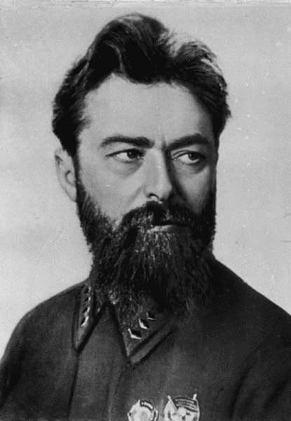

Gamarnik Ya.B.
Гамарник Ян Борисович (настоящее имя — Яков Пудикович Гамарник) – советский военачальник, государственный и партийный деятель, армейский комиссар 1-го ранга. Застрелился накануне неминуемого ареста по «делу Тухачевского».
21.05.1894–31.05.1937
Родился в городе Житомире в интеллигентной еврейской семье. Учился в гимназии. В 17 лет заинтересовался марксизмом. Познакомился с руководителями большевистского подполья на Украине Н.А. Скрыпником и С.В. Косиором, которые оказали на него большое влияние. В результате Гамарник в 1916 г. стал членом РСДРП(б). Вёл пропаганду на киевском заводе «Арсенал». После Февральской революции 1917 г. возглавлял Киевский комитет РСДРП(б). В 1918—1919 гг. вел подпольную партийную работу на Украине. В 1918 г. приехал в Москву, познакомился с В.И. Лениным и был избран в состав ЦК ВКП(б). Участвовал в подавлении мятежа левых эсеров. В 1918 г. стал заместителем председателя Киевского Совета. С 1919 г. – председатель Одесского губкома партии. В августе 1919 г. Гамарник был назначен членом Революционного Военного Совета Южной группы войск 12-й армии. В феврале 1920 г. после разгрома деникинцев Гамарник был председателем Киевского губкома партии и Киевского губисполкома. С июля 1923 г. — председатель Приморского губисполкома, а в июне 1924 г. — председатель Дальневосточного революционного Комитета, а с марта 1926 г. — Дальневосточного крайисполкома. В 1927—1928 гг. – первый секретарь Дальневосточного крайкома партии. Много занимался промышленным развитием Дальнего Востока, при его участии разрабатывался и осуществлялся 10-летний план (1926—1935 гг.) подъема экономики края. Поддержал украинизацию юга Дальнего Востока, где в разных его районах проживало от 60 до 80 % украинцев. С февраля 1928 г. по октябрь 1929 г. — первый секретарь ЦК КП(б) Белоруссии. Поддерживал политику коллективизации. В 1929—1937 гг. начальник Политуправления Красной Армии (РККА), одновременно ответственный редактор газеты «Красная звезда». Через Гамарника осуществлялась связь между руководством Наркомата обороны и органами государственной безопасности. На ноябрьском Пленуме ЦК 1929 г. Гамарник поддержал Сталина в разгроме «правой оппозиции». Речь шла о Н.И. Бухарине, А.И. Рыкове, М.П. Томском. Был делегатом 10—17-го съездов партии. На 14-м съезде избирался кандидатом в члены ЦК партии, на 15—17-м — член ЦК ВКП(б). Член ВЦИК и ЦИК СССР. В 1930—1934 гг. он становится первым заместителем наркома по военным и морским делам СССР К. Ворошилова и заместителем председателя Реввоенсовета СССР. Ему первому в Красной Армии 20 ноября 1935 г. было присвоено воинское звание армейского комиссара 1-го ранга, соответствующее званию командарма 1-го ранга. В 1934—1937 гг. Гамарник – первый заместитель Наркома обороны СССР. Оказывает всемерное содействие М.Н. Тухачевскому в осуществлении реформы технического оснащения Красной Армии. Гамарник сыграл большую роль в повышении боеготовности РККА. Тухачевский также был одним из заместителей Ворошилова, Маршалом Советского Союза, лидером группы военных противостоящих объединению военных во главе с К. Ворошиловым. Процесс по «Делу Тухачевского» положил начало массовым репрессиям в РККА. Гамарник выступил в защиту Тухачевского, заявив Сталину, что в его отношении совершена ошибка. 13 марта 1937 г. Гамарник назначен уполномоченным Наркомата обороны СССР при Совнаркоме РСФСР. 20 мая 1937 г. Гамарника сняли с поста начальника Политуправления РККА и понизили до должности члена Военного совета Среднеазиатского военного округа. 30 мая 1937 г. Политбюро ЦК ВКП(б) приняло решение: «Отстранить тт. Гамарника и Аронштама от работы в Наркомате обороны и исключить из состава Военного Совета, как работников, находившихся в тесной групповой связи с Якиром, исключенным ныне из партии за участие в военно-фашистском заговоре». 31 мая Нарком обороны К.Е. Ворошилов отдал приказ заместителю начальника Политуправления РККА А.С. Булину и управляющему делами Наркомата обороны И.В. Смородинову сообщить Гамарнику, находившемуся у себя на квартире в связи с болезнью, о решениях Политбюро. Они так же объявили Гамарнику приказ народного комиссара обороны об увольнении его из рядов РККА. Сразу же после их ухода Гамарник застрелился, понимая, что будет неминуемо арестован. 1 июня газета «Правда» и другие советские издания опубликовали короткое сообщение: «Бывший член ЦК ВКП(б) Я.Б. Гамарник, запутавшись в своих связях с антисоветскими элементами и, видимо, боясь разоблачения, 31 мая покончил жизнь самоубийством». Его имя упоминалось в приговоре по делу Тухачевского от 11 июня 1937 г. После смерти объявлен «врагом народа», было установлено его участие «в антигосударственных связях с руководящими военными кругами одного из иностранных государств», шпионаже и ведении вредительской работы. Показания на Гамарника дали многие из фигурантов дела Тухачевского. Иона Якир, первоначально указывавший, что Гамарник только сочувствовал военному заговору, в существовании которого признавались арестованные военачальники, затем изменил свои показания и заявил, что с 1936 г. информировал Гамарника о «вредительской работе» проводимой в западных пограничных районах, а тот сообщал ему о своей работе по подрыву обороноспособности на Дальнем Востоке. Сам Тухачевский показал, что Гамарник был одним из 10 членов «центра» военного заговора с 1934 г. и ведал подрывной деятельностью на Дальнем Востоке. Иероним Уборевич ограничился предположением, что Гамарник мог входить в состав руководства «заговора Тухачевского». Витовт Путна, Борис Фельдман и Август Корк участия Гамарника в заговоре не подтвердили. После этого было репрессировано большое число политработников — назначенцев Гамарника. Жена Гамарника приговорена к 8 годам тюремного заключения (а затем ещё к 10) и умерла в 1943 г. в лагере (по другим сведениям была расстреляна под Орлом в 1941 г.). В 1955 г. Гамарник реабилитирован.
| Vyshinsky A.Ya.< Prev | Next >Gelovani M.G. |
|---|